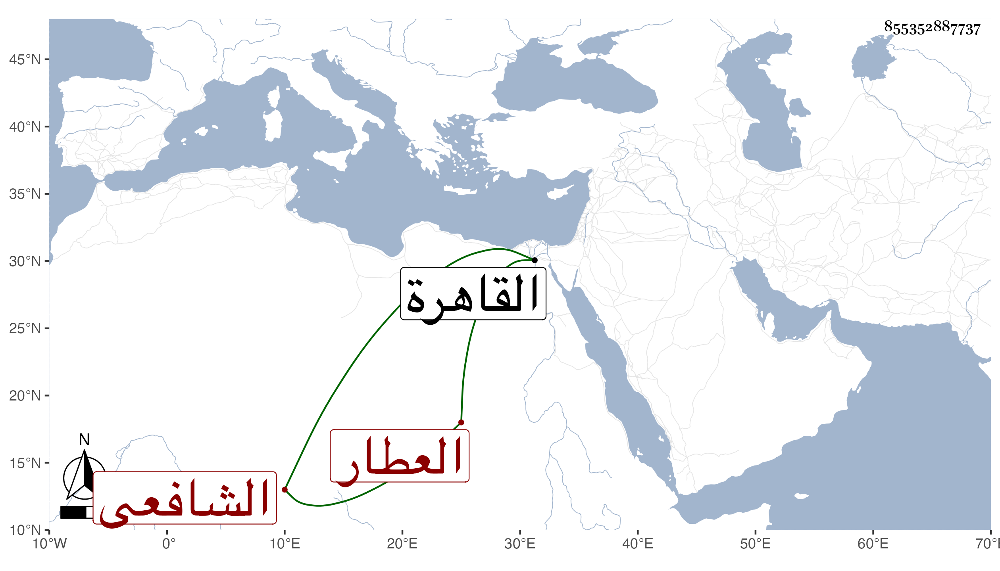

0902Sakhawi.DawLamic.ITO20230111-ara1.EIS1600.855352887737
Biography ID: 855352887737
1241
يوسف بن ناصر الدين محمد بن أحمد بن عباس الدكرنسي الشافعي العطار أبوه . سكن مع أبيه القاهرة فحفظ القرآن والمنهاج وغيره وعرض علي في جماعة وتدرب بالبدر حسن الطلخاوي في الاشتغال والوراقة وجلس تحت نظره شاهدا مع مداومة النساخة قانعا بالقليل وربما باشر في بعض الأماكن وهو فطن فهم عاقل .
